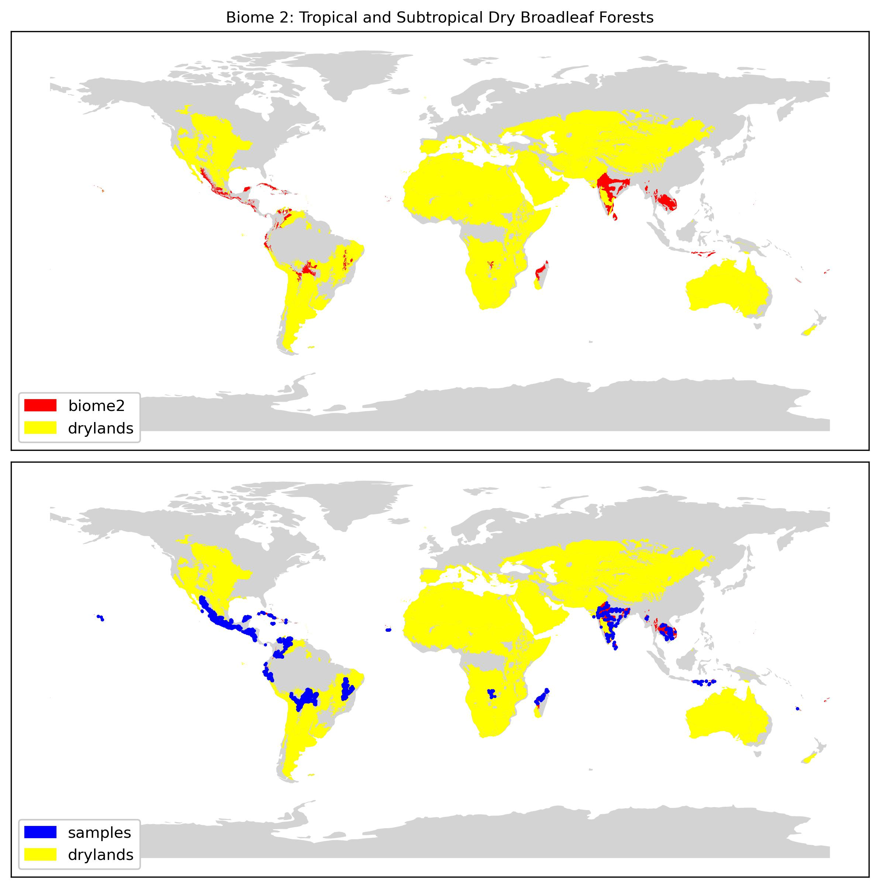

AI for Landcover Classification in Drylands
GLANCE dataset
The GLANCE dataset (Stanimirova et al. 2023) contains 1,874,999 global labeled landcover samples between 1984 and 2020. With 1,276,167 of these between 2017 and 2020 inclusive.
2017. 210,302 samples2018. 400,268 samples
2019. 49,976 samples
2020. 695,388 samples
NB. Sentinel-2 full global coverage available from July 2017, once Sentinel-2b was fully operational.
Biomes and Sample Locations
The global landcover samples (2017-2020) were then filtered by dryland biome (Terrestrial Ecoregions of the World, Olson et al. 2001):
Biome 2. Tropical and Subtropical Dry Broadleaf Forests. 28,353 samples.Biome 7. Tropical and Subtropical Grasslands, Savannas, and Shrublands. 218,249 samples.
Biome 8. Temparate Grasslands, Savannas, and Shrublands. 20,381 samples.
Biome 10. Montane Grasslands and Shrublands. 24,494 samples.
Biome 12. Mediterranean Forests, Woodlands, and Scrub. 27,006 samples.
Biome 13. Deserts and Xeric Shrublands 26,628 samples.
216,586 global dryland sample images with available Sentinel-2 data were downloaded via Google Earth Engine in a Jupyter notebook environment. NB. most 2017 samples did not have Sentinel-2 data available on Google Earth Engine.
